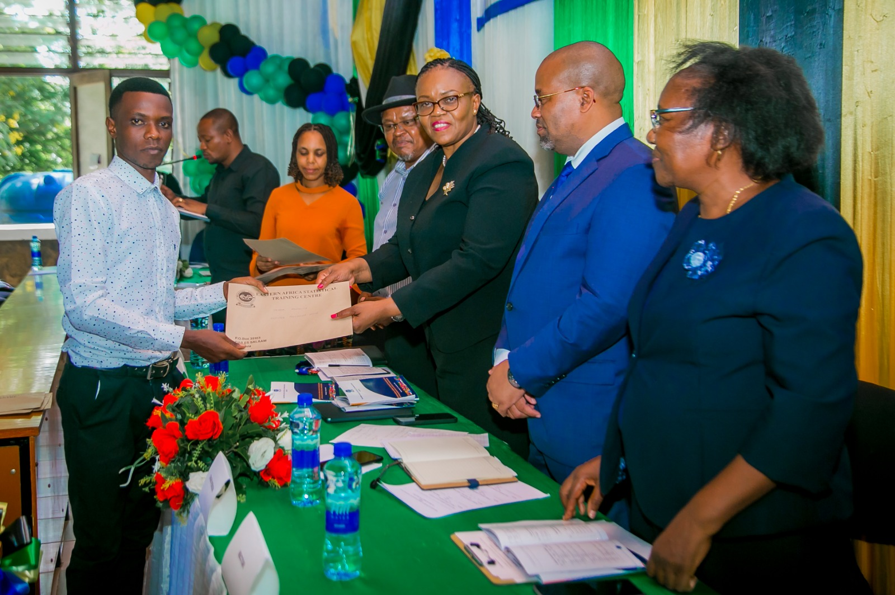
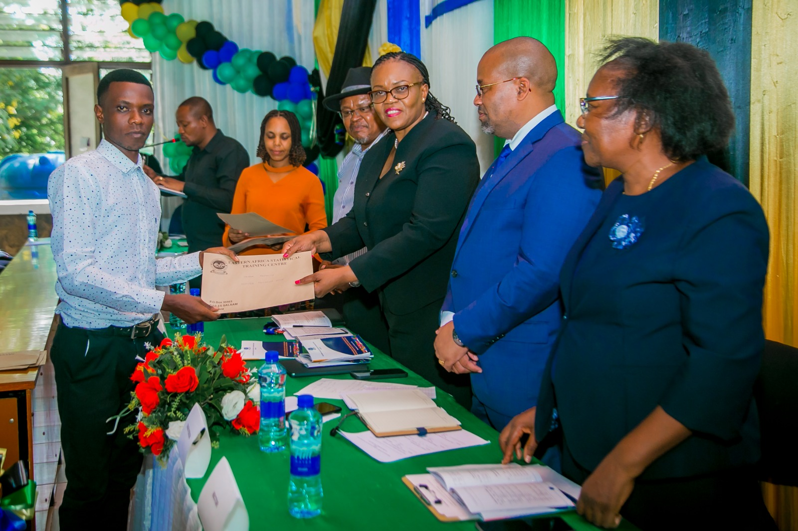

EASTERN AFRICA STATISTICAL TRAINING CENTER
Convocation at EAstc was established in 2017 and it doned one day before Graduation Ceremony. This year we are conducting our 6Th convocation on this December
EASTERN AFRICA STATISTICAL TRAINING CENTER
Convocation at EAstc was established in 2017 and it doned one day before Graduation Ceremony. This year we are conducting our 6Th convocation on this December
In this year convocation Guest of honor will be DR MKUNDWE MOSSES MASANGA and theme of the convocation is "THE ROLE OF OFFICIAL STATISTICS AND BIG DATA IN THE ECCONOMIC TRANSFORMATION AND SUSTAINABLE DEVELOPMENT OF TANZANIA "
MC
lectures
President of convocation
Guest of honor
lectures
During convocation there will be aprisal for best students and lectures.
In this year convocation we are going to elect new president of convocation during annual general meating, so we will be gladly to emphasize Alumni of EASTC to atend this convocation.


 

Eastern Africa Statistical Training Centre,
P.O Box 35103
Dar Es Salaam, Tanzania
Phone +255 22 292509090
Email:info@eastc.ac.tz